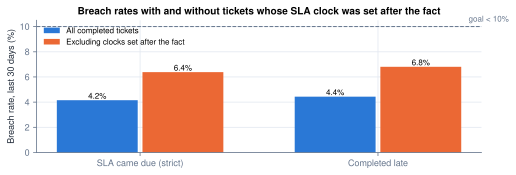
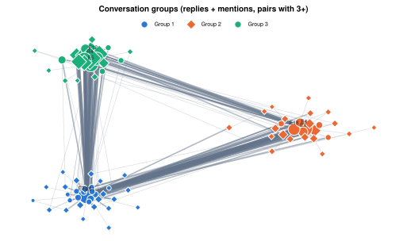
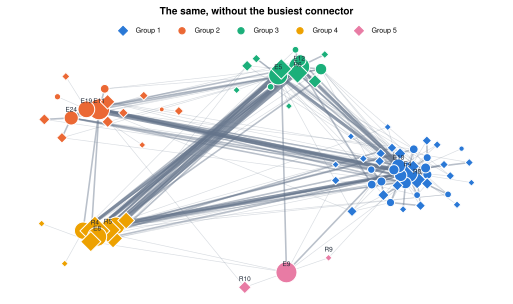
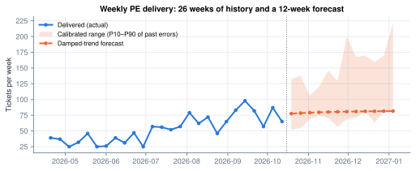

PE Delivery Analytics: what it tells us, how far to trust it, and how it stays safe
By Jorge E. Rodriguez, M.Sc. · Platform Engineering · October 2026 (updated Oct 21; first edition Oct 8) ·
Companion to the technical white paper
Bottom line
One dashboard, built only on our Jira data, answers five leadership questions: are we meeting our SLAs, when
will work finish, how much can we take on, who should do what, and how is the work connected.
Forecasts were tested against what actually happened: the dates we tell people to commit to are met about
as often as promised (93% vs a target of 85%), and the 4-week delivery forecast landed inside its range 80% of the time.
New: a caution on SLA compliance. For 35% of recently completed tickets, the SLA start date was entered
only after the work was finished, and every one of them counts as "met". Compliance looks better than it is (page 2).
New: relationship graphs show hidden dependencies on single people and stalled work we can unblock today (page 3).
The dashboard only recommends. It changes Jira only when an engineer turns writing on, on their own
computer, reviews and confirms. Every change is logged, commented in Jira and can be undone.
The questions it answers
1. Are we meeting our commitments?SLA compliance and two breach rates against our goal of under 10% breached, the trend, and the tickets that
are late or about to be.SLA · Executive Summary
2. When will work finish, and start?A likely date and a safe date to commit to for every ticket in progress or in the backlog.In Progress · Backlog
3. How much can we take on?Tickets the team will likely deliver in 4, 8 and 12 weeks with an honest range, and a "can we commit to this
project?" calculator.Delivery Forecast · Capacity
4. Who should do what, and what slows us down?A suggested owner for each new ticket with backup and reason; the friction in comments that costs the most time.Suggested Assignments · Teams Conversations
5. How is the work connected? (new)Who asks whom, who talks to whom, who holds which skills, and which tickets wait on others, including across teams.Knowledge Graph · plus a new Welcome page that guides first-time users to the right page
How it works, in plain terms
One source, one set of definitions. Every page counts tickets, completions and SLA dates the same way.
Business days, like our SLAs. Weekends and company holidays are skipped everywhere.
Learns from our own history. Forecasts come from how similar tickets actually went for this team.
Ranges, not single dates. "Likely" is a coin flip; "safe" is what to commit to.
Explainable. Every number traces back to tickets. No AI writes the text; fixed, tested rules do.
Checks its own inputs. Jira's change history is used to catch data that would flatter the numbers.
How far to trust it
Each forecast was re-run at past dates, using only what was known at the time, and compared with what happened.
Forecast
What we checked
Result
Verdict
Safe finish date, work in progress
Share finished by their safe date (target 85%)
93%
Reliable, slightly cautious
Likely finish date, work in progress
Typical miss
1 business day
Reliable
Team delivery, next 4 weeks
Actual result inside the range (target ~80%)
80%
Reliable
Team delivery, next 8 / 12 weeks
Actual result inside the range
68% / 62%
Use as a guide
Team delivery, central estimate
Typical error
±22–27%
Good for planning
When backlog work will start
Typical miss; bias
±8 bd; none
Useful, ±3 weeks
"Safe Start" date
Share started by it (target 85%)
84%
Reliable
Target start dates in Jira today
Share of tickets that started by them
12%
Usually ~11 bd too early
New: measured going forward. Backlog forecasts can now be posted to the tickets as Jira comments (no dates
changed). The dashboard reads them back and keeps a running Forecast Track Record, so accuracy is measured
on live work, not only reconstructed.
A caution on SLA compliance
The SLA clock starts at a ticket's Target start. Jira's history shows that 102 of the 293
tickets completed in the last 30 days (35%) had their Target start entered on or after the day the work was done,
usually at closing. All 102 count as "met", because a clock started at the finish cannot run out. The share has grown
from 5–6% last winter to 30–32% since July.

Why it matters: leaving those tickets out raises today's breach rates from 4.2% to 6.4% and from 4.4% to 6.8%,
still under the 10% goal. Two weeks ago the same check moved one rate from 7.5% to 12.1%, above the goal.
Fix: require a Target start before a ticket can move to In Progress. The SLA page now flags these tickets
and can leave them out.
Safeguards
Risk
Protection
Unintended changes to Jira
Writing is off by default and only works on the engineer's own computer. Nothing is pre-selected; changes are previewed and need a typed confirmation.
Overwriting a colleague's edit
Each ticket is re-checked just before the change; if someone changed it meanwhile, it is skipped.
Changes nobody can trace
Every change adds a Jira comment and an audit-log entry.
A batch that turns out wrong
One-step undo, which never overrides someone's later edits.
Flattering the SLA
Moved dates are judged on the original start; clocks set after the fact are flagged.
Our own comments skewing metrics
Comments the dashboard posts are excluded from comment coverage and response times.
Assigning the wrong person
Assignment by Jira account, never by name; departed members are never suggested; new members are.
Misusing people views and graphs
For balancing work and cross-training, not rating people; graphs in our documents are anonymised.
What the relationship graphs show (new)
The Knowledge Graph page analyses how work is connected, using network analysis on the last 12 months of Jira data.
6frequent requesters send 60–92% of their work to one engineer: hidden key-person dependencies.
2skills rest on one person (ECS, Looker), and ECS's main person has left the team.
3 → 5conversation groups once the single busiest connector is left out: the team looks well connected largely through one person.
8open tickets are blocked only by work that is already finished: quick wins to unblock today.

Conversation groups (anonymised): everyone.

The same without the busiest connector: the groups separate.
Also shown: 38% of tickets are raised by the engineer who works them (self-generated work),
skills that naturally go together (e.g. Airflow + Composer) for cross-training, and the longest chain of tickets
waiting on each other (4).
Limits to keep in mind
It is only as good as Jira. Missing sizes and late-entered start dates distort SLA results (see page 2).
Graphs and comment themes show association, not proof. Conversations outside Jira aren't seen.
The assignment suggestions are new. Their effect on SLA results still has to be measured.
What we recommend
Require Target start before In Progress, so every SLA clock starts when work is planned.
Commit to requesters using "safe" dates, not likely ones.
Post forecasts weekly (all backlog) to build an unbiased track record.
Cross-train ECS and Looker; name a backup for the 6 single-engineer requesters.
Build direct links between groups to reduce reliance on one connector.
Clear the 8 "can likely move" tickets.
Pilot Suggested Assignments and compare SLA results for followed vs not-followed suggestions.

Weekly PE delivery (blue) and the 12-week forecast (orange) with its range. Likely next 4 weeks:
about 315 tickets (range 250–497).
Figures as of October 21, 2026 (6,244 Jira issues over 24 months; 12-month window for the graphs).
Methods, formulas and full test results are in the technical white paper From Jira Records to Forecasts, Risk and
Assignments, v1.1. Generated reports are kept out of the code repository; every code change runs 450+ automated tests.